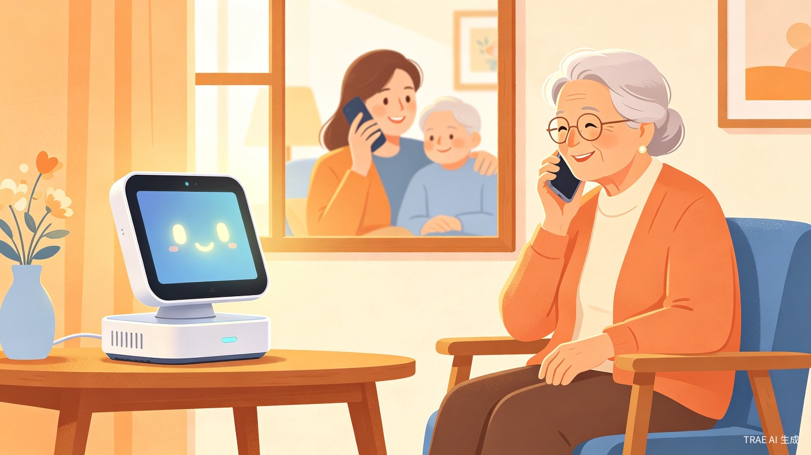
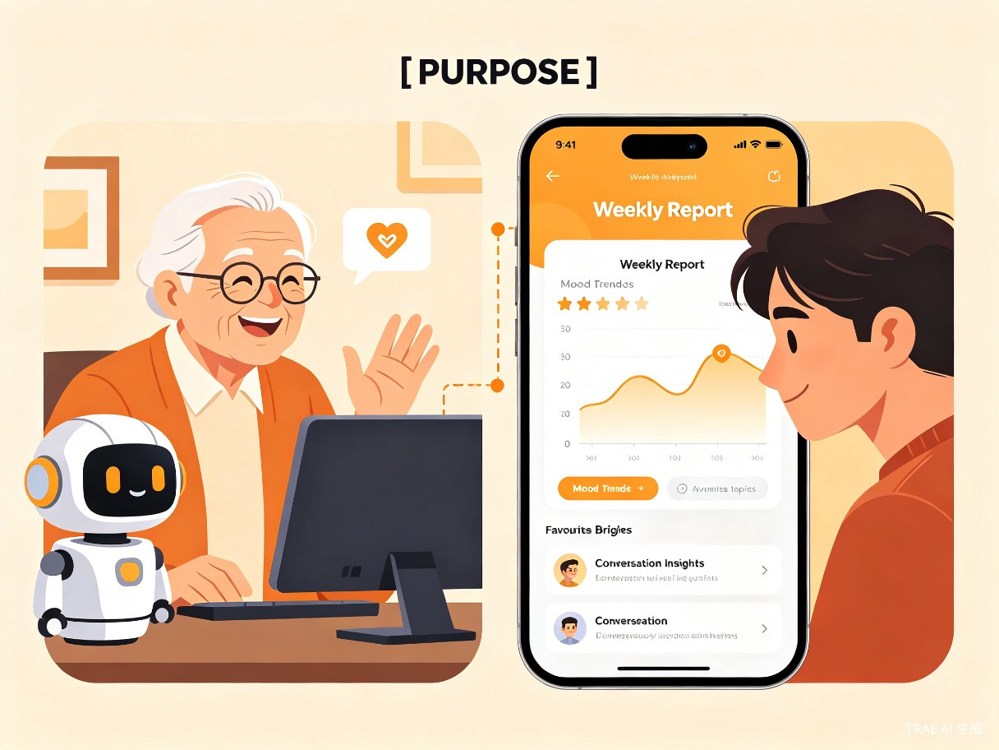
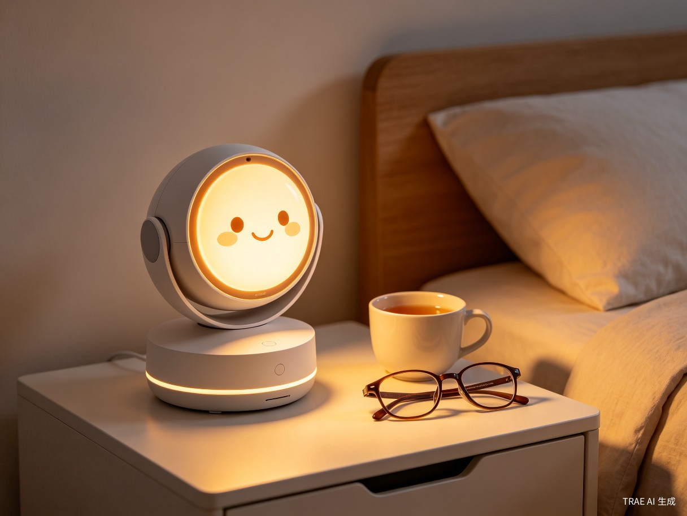

AI情感陪伴机器人 — 做两代人之间的温暖桥梁
中国正加速步入老龄化社会。截至2025年底，全国60岁及以上人口已突破3亿，其中独居老人占比超过50%。数字时代的快速发展在带来便利的同时，也在代际之间悄然筑起一道无形的墙 —— 子女忙于工作，老人困于孤独，双方明明彼此牵挂，却在通话时常常陷入"吃了吗""天气怎样"的循环，难以深入交流。
核心洞察：老人需要的不是更多的智能设备，而是一个真正愿意倾听、能够理解他们、并帮助他们与子女重新建立深度情感连接的伙伴。
独居老人每天面对的最大挑战往往不是物质匮乏，而是情感支持的缺失。他们有许多话想说，却找不到合适的倾听者；他们关心子女的生活，却怕打扰；他们渴望被理解，却不愿成为负担。
年轻一代并非不关心父母，而是陷入了另一种无力感：每次打电话都不知道该聊什么，问候变成例行公事，关心停留在表面。他们想知道父母真实的情绪状态、生活中遇到的困扰，却缺乏有效的信息渠道。
内敛是中国家庭情感的普遍表达方式。父母不善表达需求，子女不知如何开口，双方在"沉默的关心"中渐行渐远。这不是爱的缺失，而是交流方式的错位。

暖伴是一款面向独居老人的桌面AI情感陪伴机器人。它通过自然语音交互成为老人日常生活中的"朋友"，在倾听与交流中积累对老人的深度理解，并通过智能周报系统将这些珍贵的情感信息传递给子女，成为两代人之间的情感润滑剂。
以朋友角色与老人进行自然对话，注重倾听而非说教，让老人感受到被理解和尊重。
AI在每次交流中学习与该老人沟通的最佳方式，逐渐形成独特的"相处模式"。
自动记录并分析交流内容，提取老人关心的话题、情绪变化与潜在困扰。
每周向子女推送结构化报告，包含情绪趋势、兴趣话题、交流建议等。
暖伴不替代子女的陪伴，而是让每一次陪伴都更有质量。它帮助子女了解父母内心真正的世界，让"不知道聊什么"变成"我正好想问你这件事"。
采用桌面级设计，体积小巧，可放置于床头柜、茶几或书桌等老人日常活动的区域。圆润温和的外观语言，消除科技感带来的距离感。

| 项目 | 规格 |
|---|---|
| 尺寸 | 直径约12cm，高度约15cm |
| 重量 | 约600g，便于移动 |
| 麦克风 | 环形6麦克风阵列，3米拾音 |
| 扬声器 | 全频扬声器，音量适配老人听力 |
| 连接 | Wi-Fi + 蓝牙，支持4G插卡版 |
| 电源 | USB-C供电，可选电池底座 |
| 交互 | 语音 + 顶部触摸 + 状态光环 |
暖伴的AI核心定位是"朋友"而非"助手"。这意味着它不会以完成任务为导向，而是以建立情感连接为目标。它不会急于给出解决方案，而是先倾听；不会纠正老人的观点，而是尝试理解。
识别老人话语中的情绪信号，给予恰当的回应节奏，不打断、不催促。
通过语音语调、用词选择分析情绪状态，调整回应的语气和内容。
自然延续老人感兴趣的话题，在适当时候温和地引入新话题。
记住老人提过的人和事，在后续交流中自然引用，营造"被记住"的感觉。
每位老人都是独特的。暖伴通过持续交流，逐步构建该用户的个人画像：喜欢的聊天节奏、偏好的话题类型、情绪敏感点、常用表达方式等。这种学习是渐进的、自然的，不会给老人带来"被分析"的不适感。
flowchart TB
subgraph 用户交互层
A[语音输入] --> B[语音识别]
C[触摸/按键] --> D[设备状态管理]
end
subgraph AI核心层
B --> E[自然语言理解]
E --> F[情绪分析引擎]
F --> G[对话策略选择]
G --> H[个性化响应生成]
H --> I[语音合成输出]
end
subgraph 学习与沉淀层
E --> J[话题提取]
F --> K[情绪趋势记录]
J & K --> L[用户画像更新]
L --> M[周报数据生成]
end
subgraph 云端服务层
M --> N[周报推送服务]
N --> O[子女端App]
end
AI在扮演朋友角色的同时，严格遵守安全边界：
周报系统是暖伴连接老人与子女的核心纽带。它将从日常交流中沉淀的碎片化信息，转化为结构化、可行动的情感洞察。
| 模块 | 内容说明 | 价值 |
|---|---|---|
| 情绪概览 | 本周整体情绪趋势（积极/平稳/低落），关键情绪波动点 | 帮助子女把握联系时机 |
| 兴趣话题 | 老人本周最热衷讨论的话题TOP5 | 提供聊天素材，避免无话可聊 |
| 困扰关注 | 老人表达过的担忧、不适或反复提及的烦心事 | 及时发现需要关心的事项 |
| 交流建议 | 基于本周数据的下周交流主题建议与切入方式 | 降低沟通门槛，提升交流质量 |
| 精彩瞬间 | 老人在交流中展现的积极情绪片段摘录 | 让子女感受父母的日常快乐 |
子女通过小程序或App接收周报推送。报告设计遵循"温暖、简洁、可行动"的原则 —— 不是冰冷的数据报表，而是一封关于父母的"情感家书"。每份周报末尾附带"本周建议通话话题"，子女可以一键拨打，带着准备好的话题与父母聊聊。
示例场景：周报显示老人本周多次提到"楼下花园的月季开了，但没人一起看"。子女收到后，周末通话时自然地说："妈，听说楼下月季开了，您给我描述描述？" —— 一次有温度的对话就此展开。
一次性设备销售收入，定价区间599-899元，覆盖基础硬件成本。
周报推送、AI对话云端处理等高级功能，月费19-39元/月。
多子女绑定、历史数据回溯等家庭共享功能，年费优惠套餐。
紧急呼叫、健康咨询对接、社区活动推荐等扩展服务。
首期聚焦一二线城市独居老人家庭，这类家庭子女通常工作繁忙、科技接受度高、付费意愿强。通过口碑传播和社区推广逐步向三四线城市渗透。
完成硬件原型与基础AI对话能力，招募50组种子家庭进行封闭测试，验证核心假设：老人是否愿意与AI建立情感连接、周报是否真正帮助改善代际沟通。
基于种子用户反馈优化AI对话策略与周报内容，完善硬件工业设计，启动小规模量产。同步开发子女端App。
正式面向消费者销售，通过养老社区合作、子女孝心营销等渠道推广。建立用户增长与留存数据体系。
引入健康监测、紧急呼叫、社区服务等扩展能力，与养老机构、医疗机构建立合作，打造老年智能陪伴生态。
暖伴的愿景
我们相信，技术的终极价值在于温暖人心。暖伴不仅是一个AI硬件产品，更是一次关于"如何让爱更好地传递"的探索。当科技学会倾听，当数据承载情感，代际之间的那堵墙，终将变成一座桥。